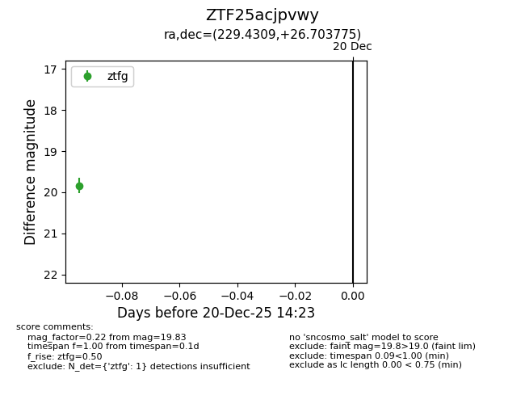
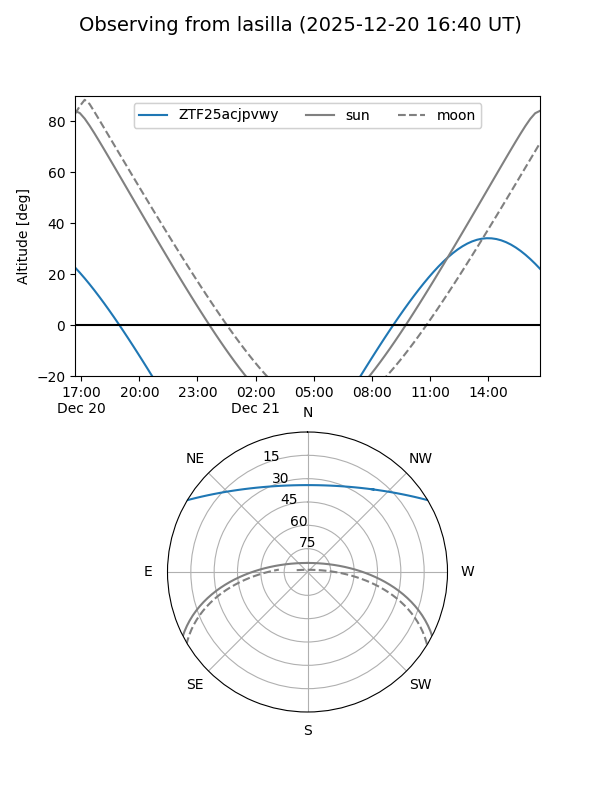
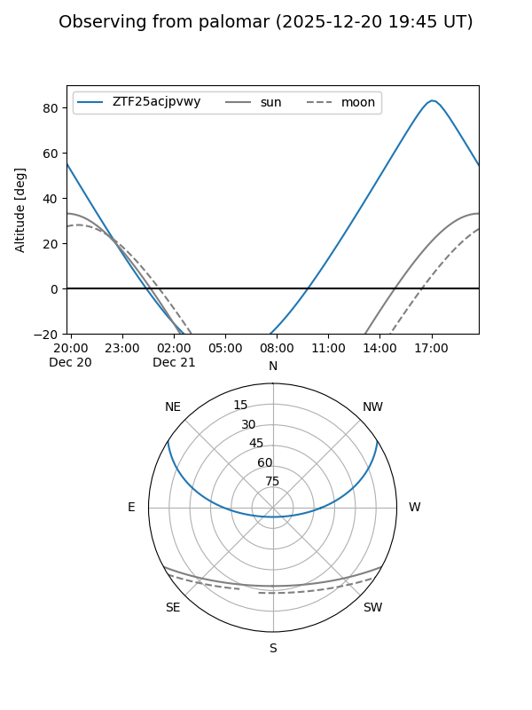

ZTF25acjpvwy
Target ZTF25acjpvwy at 2025-12-20 14:24
Aliases and brokers:
FINK: fink-portal.org/ZTF25acjpvwy
Lasair: lasair-ztf.lsst.ac.uk/objects/ZTF25acjpvwy
ALeRCE: alerce.online/object/ZTF25acjpvwy
alt names
ZTF25acjpvwy (ztf,fink_ztf)
Coordinates:
equatorial (ra, dec) = 229.4309,+26.70378
equatorial (HMS+DMS) = 15:17:43.41,+26:42:13.59
galactic (l, b) = (40.7192,+57.50479)
Flags:
Photometry:
last ztfg=19.83
1 ztfg detections
Lightcurve

Visibility


Additional plots